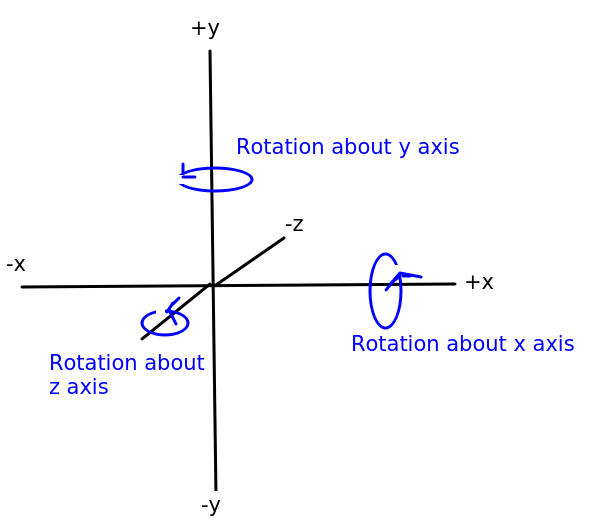
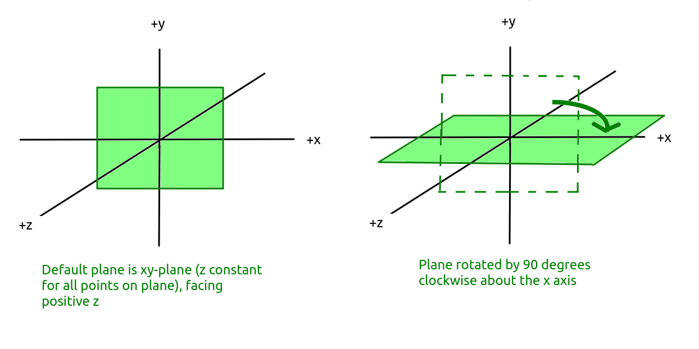
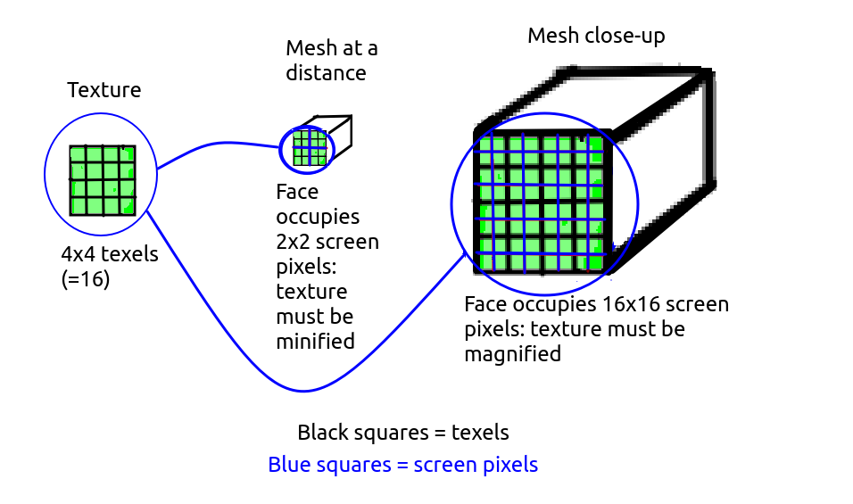
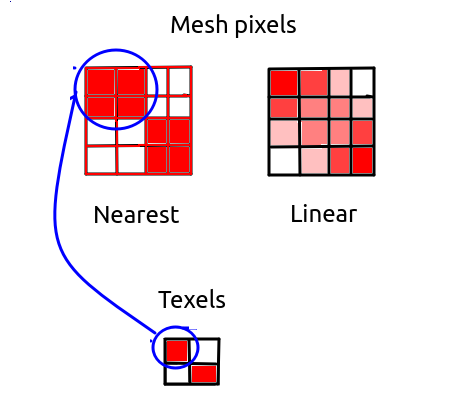
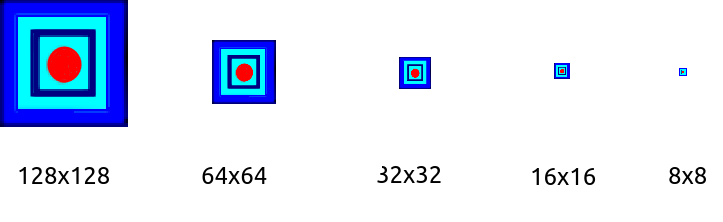

Having covered the basics of setting up, and navigating through, a scene, this week we will look at how to develop more realistic three.js worlds making use of lighting effects and textures.
We're first going to look at how we can add simple lighting effects to our scene. Before we do that, we need to take a look at different types of materials.
A word first on custom materials. So far, we have been using the THREE.MeshBasicMaterial. This very basic material does not take into account lighting effects. The material will appear the same, whether there are lights in our world or not. To account for the effect of lighting, we have to use more sophisticated materials which can reflect light. There are two commonly used materials:
THREE.MeshLambertMaterial will reflect light shone on it.THREE.MeshPhongMaterial will also reflect light shone on it, but at a higher resolution, as the lighting effect is calculated per-pixel, rather than, as is the case for THREE.MeshLambertMaterial per-vertex. The result is a more 'shiny' effect, like a metallic surface. As a result, the lighting features specular highlights. Specular highlights are the small and intensely shiny spots of light you see on a metallic, or other shiny, surface at the point at which the light shines on its surface. A good example can be seen on cars on a sunny day, which feature small bright shiny spots at the point the sunlight shines on them.There are various light types available in three.js, each representing the different types of light we get in the real world. Four of the most commonly used are as follows:
THREE.AmbientLight. Ambient light is the background lighting in our world. It does not radiate from a particular direction; there is no single light source. All objects, however they are oriented, will be lit by the ambient light. A good example of ambient light in the real world is the daylight on a cloudy day. You cannot see the sun but nonetheless the world is lit - perhaps rather dimly, but nonetheless still lit. There are no shadows, and everything is lit equally.
THREE.DirectionalLight. A directional light is a light which is placed at a particular point within our world (for example, y=100) and shines in a particular direction, towards a target (which, by default, is the origin). Directional lights can be considered infinitely far away, so that they shine from a particular direction no matter where in the world you are. They are thus similar to the sun. So, for example, a directional light will shine fron the same direction whether you are at x=100, y=0, z=-100 or x=-500, y=10, z=-500, so boxes at each of these locations will be lit the same way (the top face of the box only will be lit if the directional light is shining straight down).
THREE.PointLight. A point light is, like a directional light, placed at a particular point within our world. However, unlike a directional light, it shines in all directions and objects will be lit differently depending on what side of the point light they are placed. A point light is similar to a light bulb in the real world. So a box to the left of a point light will be illuminated on its right face, while a box to the right of a point light will be illuminated on its left face. Look at the diagram below showing a light bulb as a point light. The floor to the right of the bookcase is lit by the point light, but the floor to the left of the bookcase is not, because the bookcase blocks the light from the point light reaching it. Similarly only the right of the bookcase is lit by the point light, not the left.
THREE.SpotLight. A spotlight behaves in much the same way as a real-world spotlight. A cone of light shines down from the spotlight, and the orientation of this cone depends on the orientation of the spotlight. Only objects within the cone will be lit. On the diagram, only a small section of the floor to the right of the bookcase, and part of the right-hand side of the bookcase, are lit. With a spotlight, the direction it shines, as well as the angle covered by the cone of light, can be defined.
Here is an incomplete code example (the code to setup the scene, camera and renderer is not present) of using all four light types. In general, when specifying light, you must specify its colour (again, as a hex code, just like for a material) and its intensity (a floating-point number between 0 and 1, with 1 indicating full intensity). For types other than ambient, you must also specify its position, and if you wish a directional light or spotlight to shine somewhere other than the origin, you must specify its target.
// Create ambient light
// Specify colour and intensity
const light = new THREE.AmbientLight(0xffffff, 0.2);
// Add the light to the scene
scene.add(light);
// Create a directional light
const light2 = new THREE.DirectionalLight(0xffffff, 0.6);
light2.position.set(0, 100, 0); // x, y and z coordinates
scene.add(light2);
// Create a point light
const light3 = new THREE.PointLight(0xffffc0, 0.8);
light3.position.set(0, 10, 10);
scene.add(light3);
// Create a spotlight
const light4 = new THREE.SpotLight(0xffffff, 1.0);
light4.position.set(5, 20, 10);
// Change the spotlight's target to be the point x=-5, y=0, z=5
light4.target.position.set(-5, 0, 5);
scene.add(light4);
// If the target changes, it must be added to the scene
// This also applies to directional lights
// See https://threejs.org/docs/index.html?q=SpotLight#api/en/lights/SpotLight.target
scene.add(light4.target);
// Create some shapes using Lambert and Phong materials
const redLambert = new THREE.MeshLambertMaterial({color: 0xff0000});
const greenPhong = new THREE.MeshPhongMaterial({
color: 0x00ff00,
shininess: 60 // default is 30
});
const box = new THREE.BoxGeometry();
const sphere = new THREE.SphereGeometry();
const mesh1 = new THREE.Mesh(box, redLambert);
const mesh2 = new THREE.Mesh(sphere, greenPhong);
mesh1.position.set(0, 0, -10);
mesh2.position.set(0, 0, -5);
scene.add(mesh1);
scene.add(mesh2);
You can later remove a light (indeed, any Object3D, wbich also includes meshes; remember that an Object3D represents any object with a position which can be added to the scene) using the scene's remove() method, e.g.:
scene.remove(light4);
Just like the camera and meshes, lights are themselves Object3Ds. This is why we can give them properties such as a position.
To make our world even more realistic, we can add shadow effects, whereby an object will cast a shadow on a second object (often the ground) for areas on the second object in which the object blocks a light source. Shadows require relatively expensive computation, so if you don't need them, it's best to leave them out; in fact, by default, they are left out. However they can add nice realism to virtual-reality applications and games.
To create shadows, you need to do the following:
renderer.shadowMap.enabled = true;
castShadow property to true:
mesh1.castShadow = true;
receiveShadow to true:
groundMesh.receiveShadow = true;
pointLight.castShadow = true;
We are talking about casting shadows on the ground, so this is a good point to introduce the plane geometry. The plane geometry represents a plane, or flat surface, and so is commonly used to represent the ground. When creating a plane geometry, we specify its width and height in world units:
const planeGeom = new THREE.PlaneGeometry(100, 100);This will create a plane geometry of width 100, height 100, centred about the origin by default. However an important point is that by default, the plane geometry is created in the xy-plane, i.e. all points on the plane will have constant
z. Also by default, the plane faces positive z. This will have the effect of creating a plane that appears to stand up, vertically, facing positive z. (Planes are single-sided by default, though we can adjust this).
What we really need is a ground plane, i.e. a plane geometry in the xz-plane, with all y coordinates on the plane constant, and facing up, towards positive y. To do this, once we've created a mesh using the plane geometry and an appropriate material, we need to rotate the plane by 90 degrees (0.5 * PI radians) clockwise about the x axis. The diagram below clarifies the operations of rotating about the x, y and z axes:

To do this, we set the mesh's rotation to -0.5*PI radians:
planeMesh.rotation.x = -Math.PI * 0.5;
The effect on the plane is shown in the diagram below. Note how the plane is originally the xy-plane and we rotate it clockwise by 90 degrees so that it becomes the xz-plane:

There are various other things we can do with planes, for example we can define a plane mesh to consist of multiple vertices (points) a specific distance apart, such as a plane with width 100, height 100 made up of many points one unit apart. This is useful for generating terrain, by giving each vertex a different y coordinate representing its height above sea level in metres. We will return to this later.
We will now move onto the second main topic for this week: textures.
In a VR application or 3D game, most of the features of the 3D world don't have simple colours. Instead they have realistic-looking have textures such as brick walls, marble, metallic surfaces and so on. A texture is loaded from an image (such as a PNG image) and then associated with a material to be used as the surface for a mesh. The material can be any type of material (e.g. MeshBasicMaterial, MeshLambertMaterial and MeshPhongMaterial); the light reflectance will be defined by the material type rather than what is inside the PNG image.
To load a texture, THREE.TextureLoader is used. For example:
// Create a texture loader
const loader = new THREE.TextureLoader();
// Load an image to use as the texture
const texture = loader.load('metal.png');
// Create a material using the texture
const material = new THREE.MeshLambertMaterial({map: texture});
// Create a mesh
const mesh = new THREE.Mesh(boxGeom, material);
// Add it to the scene
scene.add(mesh);
Note how the texture returned from loader.load() is used when creating a material, by specifying it as the material's map (texture map) property.
One issue with the above is that it might take time to load the texture, particularly if the network connection is slow. However the load() method returns immediately, even if the texture is not loaded. The result might be that the mesh is created before the texture has loaded, which will mean it will appear black initially, while waiting for the texture to load. We can resolve this by using the TextureLoader asynchronously, and specifying a callback function to run once the texture has loaded. For example:
// Create a texture loader
const loader = new THREE.TextureLoader();
// Load an image to use as the texture
loader.load('metal.png', texture => {
// Create a material using the texture
const material = new THREE.MeshLambertMaterial({map: texture});
// Create a mesh
const mesh = new THREE.Mesh(boxGeom, material);
// Add it to the scene
scene.add(mesh);
});
Note how in this version we supply a callback function to the load() method, which runs when the texture is fully loaded. This callback function takes the texture object as a parameter.
Texture wrapping refers to the way in which the texture is applied to the mesh. By default, the texture is stretched over the whole mesh that it is applied to (this is called clamping). For a small mesh, that might be what we want (e.g. stretching an image containing the Coke logo over a cylinder to represent a Coke can) but for a larger mesh, such as a plane representing the ground, we probably don't want this. Let's say we have a texture image of 128x128 representing a floor tile. If this is stretched over the whole image it will appear blurred. We want instead to tile the texture image so that it repeats. We can do this by setting up repeat wrapping:
// Create a texture loader
const loader = new THREE.TextureLoader();
// Load an image to use as the texture
loader.load('floor.png', texture => {
// The S axis of the texture is its horizontal axis (like x)
texture.wrapS = THREE.RepeatWrapping;
// The T axis of the texture is its vertical axis (like y)
texture.wrapT = THREE.RepeatWrapping;
// Make the texture repeat 64 times horizontally, 64 times vertically
texture.repeat.set(64, 64);
// Create a material using the texture
const material = new THREE.MeshLambertMaterial({map: texture});
// Create a mesh
const mesh = new THREE.Mesh(planeGeom, material);
// Add it to the scene
scene.add(mesh);
});
Note how we specify the wrapS and wrapT properties of the texture to specify how the texture is applied to the mesh in the horizontal (s) and vertical (t) directions. THREE.RepeatWrapping means that the texture will repeat in that direction. To specify the number of times the texture will repeat across the whole mesh, we set the properties of texture.repeat, the first parameter being horizontal and the second, vertical. Here, the texture will repeat 64 times both horizontally and vertically across the whole mesh.
Our texture occupies a certain number of pixels, for example 128x128. However the number of pixels that a mesh occupies while being displayed on screen is liely to be different to that - if the mesh is close to the camera it will likely occupy more pixels than the texture, but if it is far away it will likely occupy less. So the texture will have to be magnified or minified to fit on the mesh. There is not an exact correspondence between pixels of the texture image (called texels) and screen pixels.
In these cases, magnification and minification filters need to be applied. The diagram below shows a texture being minified (when applied to a distant mesh) and magnified (when applied to a nearby mesh).

Magnification occurs when the texture occupies less pixels than the current view of the mesh it is to be applied to. For example, a 128x128 texture needs to be stretched across a face of a mesh occupying 256x256 screen pixels in the current view of the world. Two filter settings can be applied:
THREE.NearestFilter. The THREE.NearestFilter will pick the nearest texture pixel (texel) to display on the mesh surface. For example, if the texture is 128x128 and is being displayed on a mesh which is occupying 256x256 screen pixels in the current view of the world, then the texel equal to the screen pixel divided by 2 (because 256/128 is 2) will be picked. So, screen pixel (200,200) (note the coordinate format: first figure is horizontal position, second figure is vertical position) will use texel (100,100) as 200/2 is 100 - but so will (201,200), (200,201), and (201,201) (assuming rounding down during division). The end result of this will be that the texel at (100,100) will be stretched across 2 screen pixels horizontally and 2 vertically, so 4 in total. This will lead to a very pixelated and blocky looking texture, as the texture is stretched across the mesh without any blending of the pixel colours occurring. So it is not ideal, and therefore not the default. It is computationally relatively fast, however, so may be chosen in low resource environments.THREE.LinearFilter. Rather than always picking the closest texel to a pixel, it merges the colours from the all the closest texels to that pixel to produce the final colour, weighting each texel depending on how close it is to the pixel. So for example if we divide screen pixel (201,201) by two, we get (100.5,100.5). So this screen pixel is in between four texels: (100,100), (101,100), (100,101); and (101,101). So the colours of all 4 texels are blended to give the colour for this pixel.The image below shows the difference. Note how with NearestFilter the nearest texel to a given pixel is always picked, while with LinearFilter blending of the colours of the nearby texels occurs, leading to a smoother and less pixelated effect.

Minification is the opposite to magnification, and occurs when the current view of the mesh occupies less pixels than the texture, for example the texture is 128x128 texels but the face of the mesh that the texture is to be applied to occupies 64x64 screen pixels. So the texture has to be minified (shrunk) before being applied to the mesh. The above two filters are also used for minification, but alternatively, efficiency and rendering improvements can be made with mipmaps.
A mipmap is a series of images of different dimensions in powers of 2, scaled down from the original texture. So for example if the texture is 128x128, there would be images of size 128x128, 64x64, 32x32, 16x16, 8x8, 4x4, 2x2 and 1x1. These are automatically created when a texture is loaded. For a mipmap to be created, the original texture must have power-of-2 dimensions.
The diagram below shows a series of mipmap images: note the smallest are too small to be shown visibly so the shown images range from 128x128 (the original image) to 8x8.

The mipmap image(s) most closely matching the current pixel dimensions of the mesh will be selected when applying the texture to the mesh. For example if the mesh, in the current view of the world, occupies 64x64 pixels, then the 64x64 pixel mipmap image will be chosen to be applied to the mesh. The advantage of mipmaps is that they are pre-computed when the texture is loaded, so that the texture does not need to be resized every time the visible size of the mesh changes, saving computational effort. Mipmaps also reduce display artefacts when the mesh is distant.
There are four different mipmap-based minification modes, described in the documentation. Two of the modes blend adjacent mipmap images when the visible size of the mesh is not an exact power of two, for instance if the visible size is 96x96, texels fron the 128x128 and 64x64 mipmap images will be blended. The mode which gives the highest-quality display is THREE.LinearMipmapLinearFilter as that performs both texel and mipmap blending.
Use the magFilter and minFilter properties of the texture e.g:
texture.magFilter = THREE.LinearFilter; texture.minFilter = THREE.LinearFilter;
Create a copy of your work from last week. Modify this copy to include lighting and textures, as described below.
y coordinate to 0.1, to ensure that the camera is slightly above the ground. Also change the downwards camera control (z key) so that the camera cannot go below y=0.1.e.keyCode has been deprecated and it's now recommended to use e.code instead. This gives a string describing the key that was pressed. For letters this begins with the string Key while for numbers it begins with the string Digit, so that the A key is represented by KeyA and the digit 0 is represented by Digit0, for example.
npx http-server.This is an optional exercise for those of you coping well with the material. Using the knowledge you have gained so far, you are going to develop a very simple game, "Sphere of Doom". This simply involves a sphere chasing the player (camera) round the world.
requestAnimationFrame() takes a parameter representing the number of milliseconds that have passed since the page was loaded, e.g.
requestAnimationFrame(render);
function render(t) {
// t is the number of milliseconds since the page was loaded
}
What you need, however, is the number of milliseconds since the rendering function was last called, as you need to move the sphere at a constant rate in units per second. (This is necessary as different computers refresh the screen at different rates). You can use this logic to do this:
// Variable containing time of last render. Set to null initially to indicate
// no rendering has taken place yet
let previousRenderTime = null;
requestAnimationFrame(render);
function render(t) {
// Use the ternary operator, a condensed 'if' statement.
// The logic is saying: 'if previousRenderTime is null (i.e. it's the first render),
// set timeSinceLastRender to 0, otherwise set it to the difference betwen
// the current time and the previous render time'
const timeSinceLastRender = (previousRenderTime === null) ? 0: t-previousRenderTime;
// Set previousRenderTime equal to the current time, ready for the next render
previousRenderTime = t;
}
timeSinceLastRender from the above code example to achieve this. Remember that you need to divide by 1000 to convert from milliseconds to seconds!{kind=link}